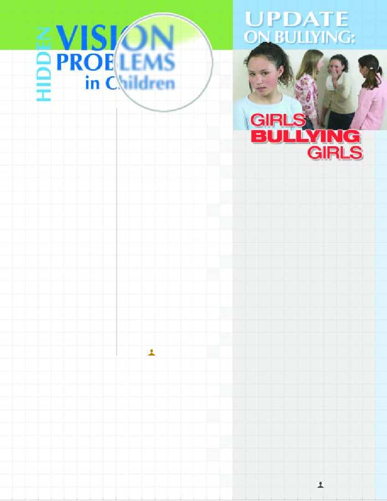

The bullying tactics employed
by boys may
leave physical scars, but girl-on-girl
bullying often causes much deeper wounds.
While boys usually
express power over others
through physical aggression, girls use inclusive
relationships to wield power over
their victims. Though the victims of
girl-on-girl bullying
are deeply affected, they are difficult to
identify because girls bullying tactics are
usually secretive and non-physical,
and the victims
often do not report the bullying. Girl
bullies will exert their power over their
victims by excluding them, spreading
rumors about them,
or teasing them in front of their peer-group.
Engaging in this type
of psychological
warfare can be extremely
detrimental to the
victims' confidence and
self esteem. Recent
technology has only provided
new ways for bullies to intimidate
and harass their victims. E-mails,
instant and text
messaging, and the internet are used to spread
rumors and photos to an
ever widening
group, damaging the victim socially and
emotionally even more. Some of
the symptoms
of girl-on-girl bullying are anxiety, depression,
frequent absences from school, and
even suicide. Bystanders often
keep silent,
terrified that they will be targeted as
the group's next victim.
Teachers and parents play
an important
role in the prevention
and reduction
of bullying. Awareness of the
problem must be raised.
Open discussion and
identification of the problem
and the perpetrators
must be encouraged so that it is understood
that
this
behavior
is
unacceptable and so victims and bystanders
feel sufficiently supported by parents,
teachers and peers
to report on the bullies without fear of
additional repercussions. A
ccording to Dr. Appelbaum, it is very
possible for a
child with 20/20 eyesight
to have vision problems and therefore
encounter an array of problems
in school—most predominantly in
reading and comprehension.
Babies
are not born knowing how to focus. Some
never learn to use their eyes properly and
need to be taught to focus and follow. (20%
of normal healthy children have
trouble sustaining focus).
School-age children
who have difficulty moving their
eyes across
the page, concentrating,
integrating and processing information
find it difficult
to stay on-task. They often lose
their place, get
easily discouraged, lose
interest and ultimately
develop behavioral problems
and low self-esteem. During
more than 20 years as a specialist in vision
therapy, Dr. Appelbaum has seen an explosion
in the number of children labeled as
ADD (Attention Deficit Disorder).
Between 1990 and 1996,
there was a 500 percent
increase in the use of Ritalin (Dr.
Appelbaum will be
providing a Fall
workshop,“When ADD Doesn't Add
Up”). A screening
for developmental vision and sensory
integration problems can usually
identify common vision
problems. Vision therapy
can teach children to maintain
focus, make sense of what they see,
change the visual
system's response and help the
senses integrate. Treatments
may include therapeutic,
stress-reducing lenses, visual
hygiene suggestions and
procedures that can
be done at home and at school, as well as
the doctor's office, and may resolve the issue
without the need for medication. Of
course, vision therapy will not solve all problems.
Many children may indeed need medication.
Many may suffer from auditory problems,
food allergies, sensory and/or
developmental delays, in addition to
vision problems.
However, most children who
experience learning
difficulties would benefit
from a thorough evaluation of their symptoms.
Stanley A.Appelbaum O.D., FCOVD
will present "VISUALLY
ENHANCED THERAPY: Identifying, Understanding
and Managing Visual & Vestibular Deficits" Sunday
& Monday, March 26 & 27, 2006 Geared
to OTs, PTs, SLPs, and Educators who work with children diagnosed
with ADD, learning, movement
or performance difficulties, the workshop will focus on the differ-
ence between eyesight and
vision, developmental vision concepts, testing protocols
and practical,innovative sequential
vestibular-visual activities to facilitate optimum per- formance
in children. Dr.Appelbaum
& Ms. Bassin, in private practice for over 20 years, utilize
functional & developmental
concepts in treating vision problems &
enhancing vision skills & abilities
– principally in relation to infant vision development, visually-related
learning difficulties, ADD/ADHD, Dyslexia, Strabismus,Amblyopia, etc.
To register and for more information,
call Cheyn Weinstein - 718-338-3838, ext. 420
WE RECENTLY
HAD THE GREAT PLEASURE
OF HOSTING A WORKSHOP
WITH DR.
STANLEY A. APPELBAUM,
A CERTIFIED FELLOW
IN THE COLLEGE
OF OPTOMETRISTS IN
VISION DEVELOPMENT,
AND HIS WIFE
BARBARA BASSIN,
OTR/L BCP. 5